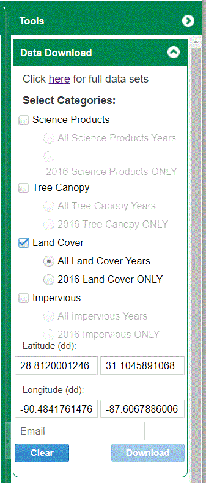

Map view and the ability to subset small regions.
|
 |
Zoom in the to area desired. The map can be resistant to dragging the viewport; just be persistent. Open the download tool in the upper right of the map.
Pick "Place" in the lower left, which then changes to "clear". Drag the selection box to where you want it. Check that the bounding box is correct. Since you won't see the files for a day, you should be sure you are getting the right area. Pick land cover, and all land cover years. |
|
Keep track of where you saves the file, and being able to determine which data set it is. The file names for the ZIP, and the extract, is a random string of numbers. The files should start with NLCD_20NN for the year. They will be Geotiffs. |
Last revision 3/21/2023